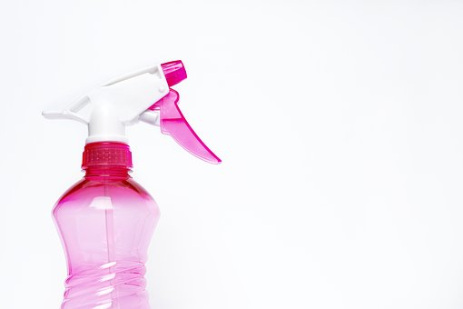
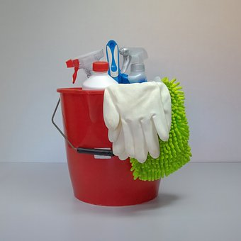

エアコンの掃除は楽できない。素直に業者を利用したほうがいい理由とは？
エアコンの掃除、大変なだけでなく危険もあります。
エアコンの掃除、そろそろしないとと思っている方って結構いらっしゃいますよね。
大変そうだけど楽にできる方法はないかな？と一度は考えると思います。
その考えは危ないです。楽を出来る方法以前に普通にやった場合にきれいに掃除できない可能性が高いです。
今回はエアコンの掃除について自分でやらず業者を使ったほうがよい理由についてお話します。
カバーを外すのが大変！壊れる危険性も
エアコンのカバーを外し方知っていますか？
まず外のカバーをドライバーでネジを外す必要があります。
高所にあるので台に乗りながら作業しないといけない可能性が高いです。
外のカバーを外すと中に紙のフィルターが入っています。
これを誤って水で掃除したり何かの拍子に破ったりしてしまうと、エアコンが壊れてしまいます。
次にルーバー（風向きを変える部分）も外しますが意外と柔らかく折れる危険性があります。
最後に内側のカバーを外すのですがこれもドライバーでネジを外した後に外します。
カバー自体がやわらかく折れそうなのと、外すときに上に引っ張りながら外すことを意識しないとなかなか外れないです。
カバーを外すだけでも結構大変で心が折れそうになるのです。
埃（ほこり）が隙間に詰まってしまう
エアコン掃除のグッズにエアコンクリーナーやエアコンスプレーなどがあります。
これらの製品は水圧が物足りなく、埃（ほこり）が隙間に詰まってしまう可能性があります。
埃（ほこり）とカビだらけのエアコンに微妙な水圧をかけたところでただ濡らしているだけになってしまいます。
また洗浄に必要な道具の加圧器や洗浄材、足場や工具、養成に必要なアイテムなどをそろえるだけでも大変で、結構な金額になります。
楽しそうだからやってみたいという場合には問題ありませんが、楽するためやお金をかけないために自分でやるのはおすすめしません。
カビまでは掃除できない
送風ファンやアルミフィンといったパーツがエアコンの中でつかわれていますが、掃除していないエアコンにはカビがぎっしりついています。
エアコンが匂うと感じた方は、その匂いの原因はほとんどカビのせいです。
酷いとパーツを分解して洗う必要がありますが、その分解も素人には容易ではないです。
取り付けたまま洗うのであれば、足場をしっかり作る必要があります。
カビを取る作業も高水圧の道具とケレンや割りばしでこすり取る必要があって大変です。
ここまでやっても取り切れないカビがあるのが辛いところです。
部屋が汚れるかも？養成が大変！
掃除前にちゃんと養成をしていないと大変なことになります。
ビニールをかぶせ養成テープで固定するのですが、これ失敗すると床や壁にカビと埃で汚染された真っ黒の水が付着してしまいます。
じゃあ自分で掃除はできないのか？
エアコン掃除は業者に任せたほうが良いのは確実です。
しかし、自分でできる掃除もあります。
フィルターの埃（ほこり）取りです。
これは外側のカバーを外す必要はありますが、そこさえ外せば自分で掃除可能です。
定期的に埃を取ることで湿気がこもるのを防ぎカビの軽減効果が期待できます。
エアコンの掃除は楽できない
エアコンの匂いがきになったり、空調効果が下がっているなと感じたら、自分で掃除するのでがなく業者のサービスを頼ってみてください。
料金は1万円～3万円くらいのところがほとんどです。
自分で掃除するために道具を1からそろえた場合5千円くらいすると思います。
この差額をどう感じるかは人それぞれですが私は安全で確実な業者を利用しています。
エアコン清掃なら【エアコンクリーニングプロ】にお任せ！